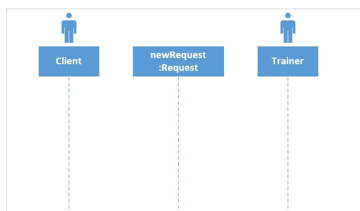
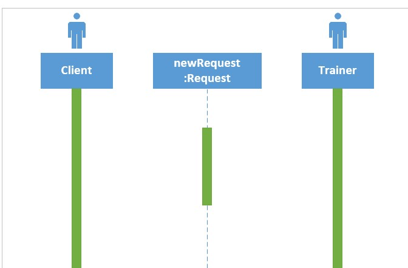
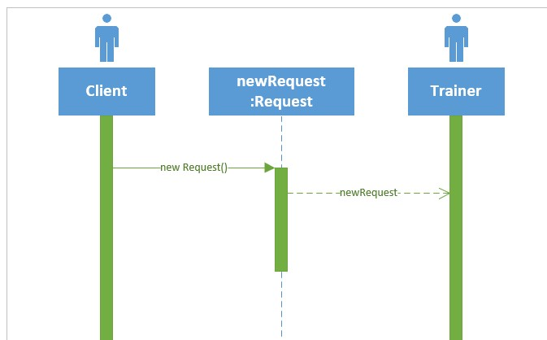
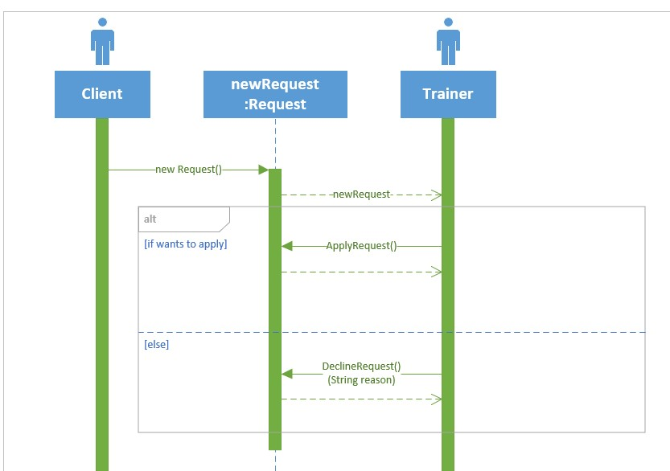
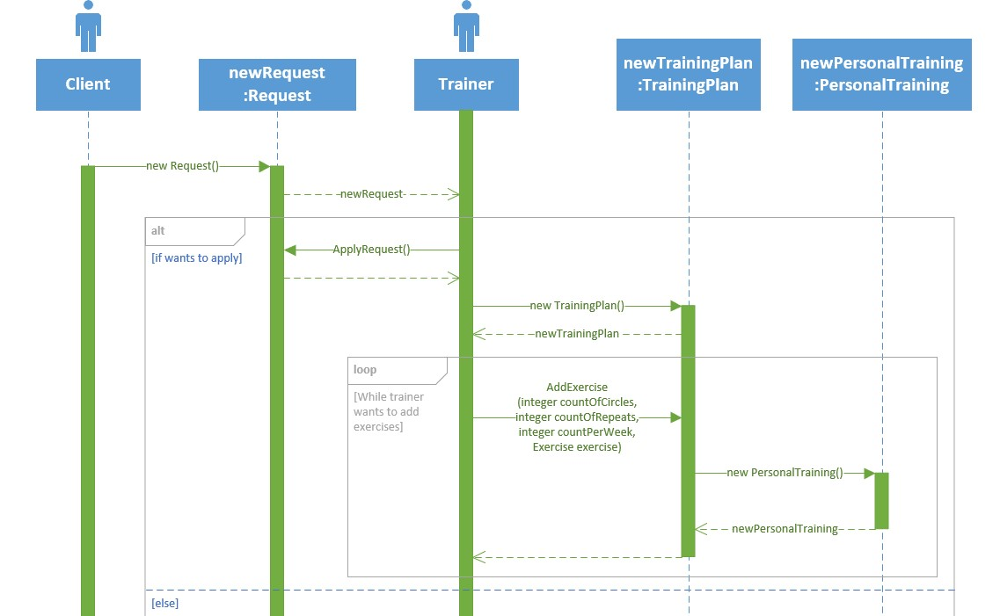

Диаграмма последовательности UML
- Диаграмма последовательности позволяет изобразить поведение нескольких объектов в рамках одного прецедента
- Диаграмма последовательности удобна для представления взаимодействия объектов, но не для точного определения их поведения
- Диаграмма показывает экземпляры объектов и сообщения, которыми обмениваются экземпляры в рамках одного прецедента
Пример построения диаграммы последовательности
В данном занятии демонстрируется построение диаграммы последовательности ответа фитнес-тренера на заявку клиента. Основные шаги построения диаграммы последовательности:
- добавление основных элементов
- работа с сообщениями
Важно
Для построения диаграммы последовательности используется шаблон "Схема последовательности UML" программы Visio
Добавление основных элементов
1. Добавляем объекты

Важно
Объекты обычно подписываются в формате «объект:класс» и изображаются как в виде обычных прямоугольников, так и с использованием дополнительных обозначений. В представленном примере объектами являются запрос, обозначенный прямоугольником, а также тренер и клиент, обозначенные элементом «Актер»
2. Добавляем полосы активности на линии жизни

Важно
Линия жизни (англ. lifeline) идет вертикально вниз от каждого объекта и упорядочивает сообщения на странице таким образом, чтобы они читались сверху вниз. Каждая линия жизни имеет полосу активности (зеленые вертикальные прямоугольники), показывающую интервал активности участника при взаимодействии
Работа с сообщениями
1. Отображаем основные взаимодействия

Важно
Сообщения показывают взаимодействие между объектами в виде горизонтальной стрелки, концы которой лежат на линиях жизни. Направление стрелки указывает на адресата, а положение на линии жизни упорядочивает сообщения по времени. При создании нового объекта и применении конструктора можно не указывать имя сообщения, указав ключевое слово «new»
2. Отображаем условия

Важно
Условия, как и циклы, изображаются с помощью фреймов взаимодействий (англ. interaction frames), позволяющих разметить диаграмму взаимодействия. Каждый фрейм представляет собой разделенную на несколько фрагментов область диаграммы, причем каждый фрейм имеет оператор, а каждый фрагмент может иметь защиту. В данном примере для условной логики используется оператор alt и будет выполнено условие, защита которого имеет истинное значение (т.е. либо принятие заявки «ApplyRequest ()», либо отказ от заявки с указанием причины «DeclineRequest (String reason)"
3. Отображаем циклы

Важно
Для отображения цикла применяется оператор loop с единственным фрагментом, причем тело итерации помещается в защиту. В данном случае для добавления тренером упражнений в план занятий используется метод «AddExercise». Данный метод создает объект «newPersonalTraining», который далее возвращается тренеру
Итоги
Вы познакомились с правилами построения диаграммы последовательности UML.